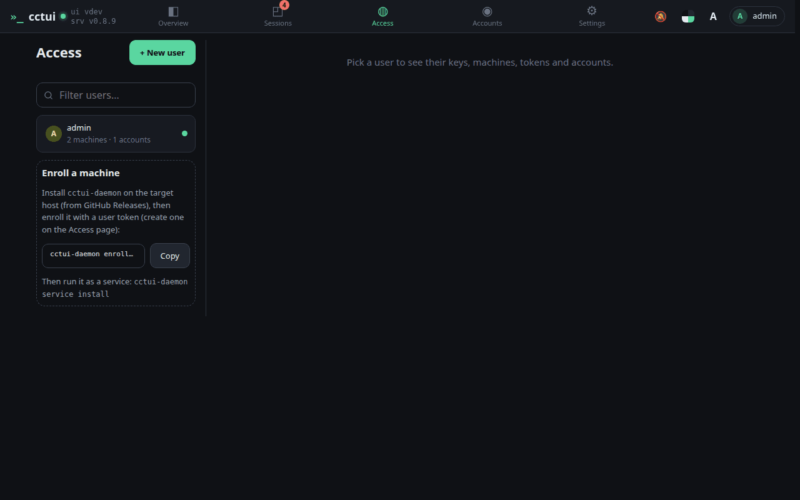
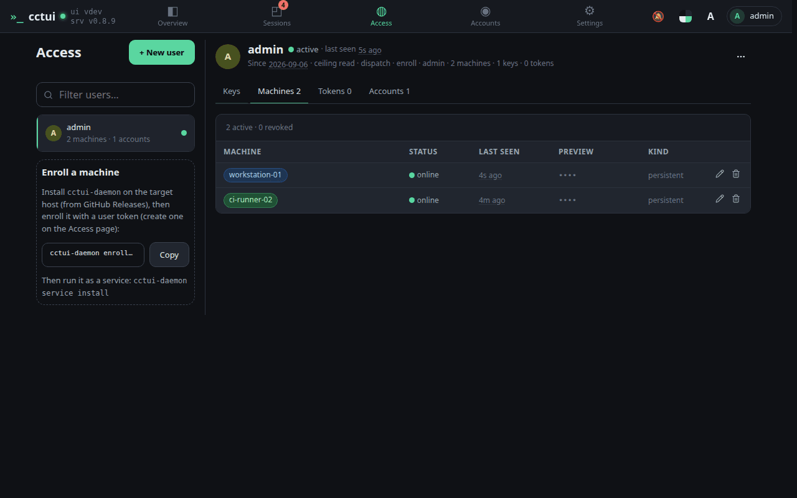
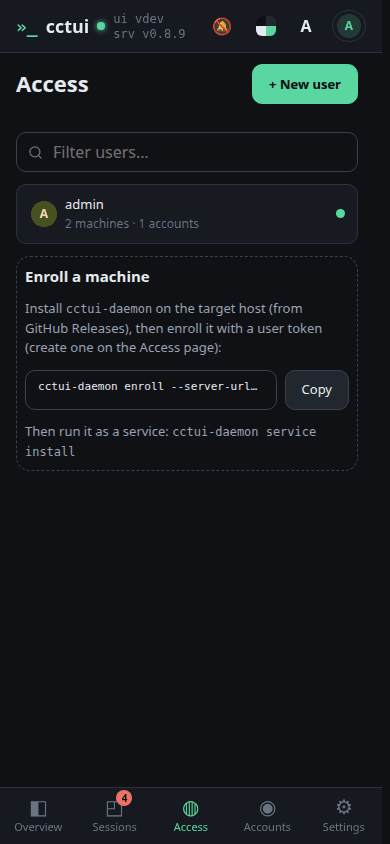
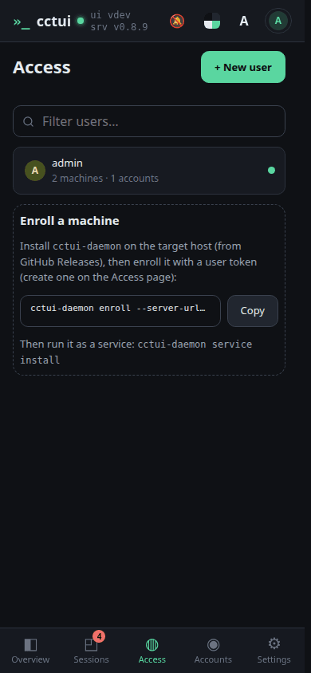
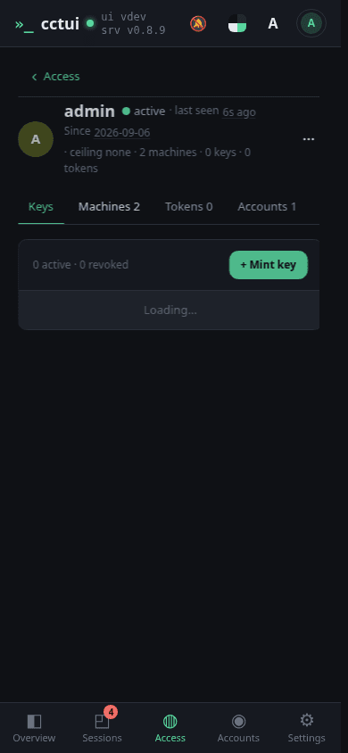
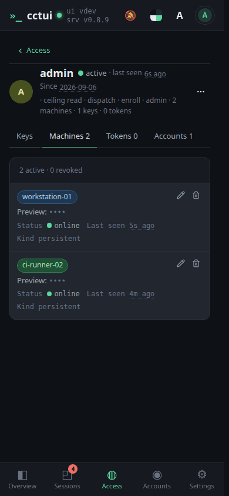

People, keys and machines Everything that can act on this instance is listed here, one user at a time.

One command per machine A machine joins by running the daemon with a user token; from then on it can host sessions.Open a user Each user carries their own API keys, machines, tokens and AI accounts.

The machines that answered Enrolled machines report in with a heartbeat, so you know which are online.
viewport=mobile theme=dark

People, keys and machines Everything that can act on this instance is listed here, one user at a time.

One command per machine A machine joins by running the daemon with a user token; from then on it can host sessions.

Open a user Each user carries their own API keys, machines, tokens and AI accounts.

The machines that answered Enrolled machines report in with a heartbeat, so you know which are online.